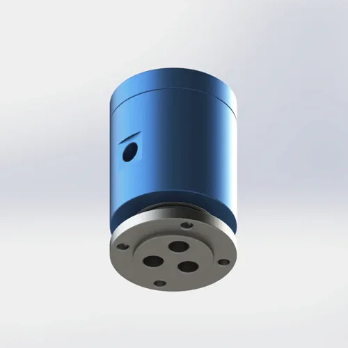

空気および軽い液体 のための三重流路 フランジ取付 ロータリージョイント。 コンパクト設計、PTFEの合成シール、AL6061ボディ。 7日以内に出荷。
BP-3P-0004は多機能の空気および軽い液体用途のために設計されている3-流路 ロータリージョイントです。 PTFEの合成シールは空気、水、オイルおよび冷却剤媒体を渡る低い摩擦トルクそして化学抵抗を提供します。 0.49 kgのAL6061ボディは密集した回転式テーブルおよび包装の機械類のためにより低い回転固まりを保ちます。
| 型式番号 | BP-3P-0004の特長 |
|---|---|
| 流路 の数 | 3-in-3-out(トリプル流路) |
| マウントタイプ | フランジ取付の特長 |
| 最高の圧力 | 1 MPa (10 bar/145 psi) —連続的な水か冷却剤の義務のための0.7 MPaにderate |
| 最高の速度 | 200 RPM — 150 RPM に連続した水か冷却剤のためのderate |
| ボディ材料 | AL6061のアルミ合金 |
| シールタイプ | PTFEのFKM Oリングのバックアップが付いている合成シール |
| 互換性のあるメディア | 空気、水、オイル、冷却剤、軽い油圧オイル(ISO VG 32最高) |
| 動作温度 | -20°C に +80°C |
| 交通アクセス カートンのサイズ: | 0.49 kgの特長 |
| 認定資格 | ISO 9001:2015のセリウム、RoHS |
| 品質保証 | 12ヶ月 |
AL6061アルミニウム ボディ: 陽極酸化されるとき降伏強さ276 MPaおよび優秀な耐食性の6061-T6アルミ合金。 0.49 kgでは、ボディは重量および封筒のサイズ問題の密集した回転式テーブルおよび包装の機械類のためにより低い回転固まりを保ちます。 陽極酸化の厚さは水および冷却剤の環境の腐食の保護のための15-25ミクロンです。 追加の保護コーティングなしで研磨剤または高影響環境にはお勧めしません。
PTFEの合成シール: ガラス繊維およびグラファイトの注入口が付いているPolytetrafluoroethylene。 -200°C に +260°C のための自己潤滑、化学的に不活性および評価される。 複合構造は、シールに理想的なPTFEを作る低摩擦係数(0.05〜0.10)を維持しながら構造的完全性を提供します。 FKM Oリングはハウジング インターフェイスで静的なシーリングを提供します。 1つのシールの混合物は予備品の目録を簡素化するすべての多用性がある媒体を扱います。
フランジ取付を選ぶとき: 機械フレームおよび回転式テーブルの堅い静止した土台のため。 フランジ取付は、ねじ式マウントよりも大きい領域に負荷を分散させ、振動や側面の負荷に優れた耐性を提供します。 用途が頻繁な取り外しを要求するか、または限られたフランジの機械化のアクセスが、ねじ取付 BP-3P-0006またはBP-3P-0007を考慮すれば。
BP-3P-0004は多機能の空気および軽い液体用途のために設計され、3つの独立したチャネルは密集した、軽量のパッケージで要求されます。 このモデルは、流路カウント、マウント、媒体、圧力、速度、温度制限が機械の要件に一致したときにリストされた用途に適しています。
適切なインストールは、6ヶ月から12ヶ月までのシール寿命を拡張します。 フランジ取付の接合箇所の早い失敗の最も一般的な原因はAL6061 フランジの表面を歪め、漏出道を作成する不均等なボルト堅くなるです。 これらの手順に従って、信頼性の高い操作を行います。
機器の フランジ 寸法と ボルトパターン が ロータリージョイント フランジ 仕様に一致することを確認します。 P.C.D.の特長 0.1 mm内で、圧力下でのフランジ歪みを防ぐ必要があります。 ダウンロードは厳密な次元、穴のサイズ、深さおよび許容のための2Dデッサンを描きます。 カスタムのボルト パターンは10日の調達期間と利用できます。 フランジ のマットが鋼鉄か鋳鉄なら、AL6061 の表面をスコアできるバリを点検して下さい。
フランジ の表面間のガスケットを置いて下さい。 指定されたトルクにクロス(スター)パターンで均等にボルトを締めます。 M6ボルト用:6～8N・m M8ボルト用:12〜15 N・m AL6061 フランジの顔を追い越し、日々のリークパスを作成します。 Undertighteningはガスケットが1 MPa圧力の下で突き出ることを可能にします。 0.49 kgアルミニウムフランジのために十分に「手の堅い」のトルクのレンチを使用して下さい。
BP-3P-0004には、固定住宅の回り止めタブが含まれています。 固定ブラケットにM6ボルトトルクを6～8N・mに固定します。 シャフトで体を自由に回転させないでください。供給ホースはツイストされ、シールは逆トルク、加速摩耗を経験します。 回り止めブラケットは、回転部品から >3 mmクリアランスを持っている必要があります。
適用範囲が広いホース(堅い管無し)を使用して空気供給に静止した側面を接続して下さい。 堅い管は振動を移し、熱拡張は接合箇所に直接、シールを強調します。 残骸からPTFE シールを保護するために40ミクロンのフィルター上流を取付けて下さい。 水か冷却剤のために、Yストレーナー(60の網)を微粒子の損傷を防ぐため加えて下さい。 対応する流路番号に合わせて各ホースをラベル付けます。
負荷なしで5分間低圧(0.2 MPa)と低速(50–100 RPM)で実行します。 このベッドはPTFE シールをシャフトの表面に置き、マイクロ滑らかな接触の地帯を作成します。 すべての3つのシールインターフェイスを漏出のために点検して下さい。 乾いたら、徐々に作動圧力と速度を10分以内に増加させます。 ランニングインをスキップする 初期のシール失敗の2つの原因です — シールはシャフトの表面の終わりに合わせる時間を必要とします。
完全な次元、許容、フランジ ボルトパターン、P.C.D.のシャフトの終わりの条件およびシールの溝の細部。 120 KB。
問い合わせ後に提供される3Dファイルを無料で配布しています。 フランジの幾何学、ボルト穴パターンおよびポートのオリエンテーションを厳密な含んでいます。 注文する前にCAD干渉確認のために使用して下さい。
完全なガイド:フランジの土台、トルクの指定、反回転、ろ過、操業プロシージャおよび維持のチェックリスト。 650 KB. リリース
AL6061の物質的なトレーサビリティ、硬度のテストのレポートおよびRoHSの承諾の証明書。 ご要望に応じて承ります。
BP-3P-0004が正しいモデルかどうかはわかりませんか? この比較を使用して、マルチ流路、高圧、または防塵ジョイントにアップグレードするときに正確に決定します。
| あなたの条件 | BP-3P-0004は合います | より良い代替 | なぜアップグレードするのか |
|---|---|---|---|
| 単一の空気ライン、手持ち型用具、重量の重要な | 0.49 kgの3 流路 | BP-1P-0003の特長 | 0.27 kgの単一の流路の安価 |
| 二重空気ライン、1 MPaの一般的なオートメーション | ⚠️ Fewer 流路 が必要 | BP-2P-0001の特長 | 同じフランジ取付、1 MPaの安価 |
| トリプル空気ライン、1 MPa、≤200 RPM、フランジ取付 | ✅ パーフェクト | — | — |
| 圧力 >1.0 MPa (例えば、1.5 MPa油圧) | 圧力の上の× | BP-2P-0002の特長 | 1.5 MPaの評価される、ねじ取付の二重流路 |
| 必要な4つの独立した流路 | 〇 少なすぎる 流路 | BP-8P-0001の特長 | 8 流路独立したシール、フランジ取付 |
| ほこりや研磨環境(スチールミル、鋳物) | ・・・防塵なし | BP-2P-50-0001の特長 | 防塵 シールおよび保護shroud |
| 食品対応か医学のクリーンルーム | FDA ではない × の標準的な FKM | カスタム FDA対応 | FDA 21 CFR 177.2600迎合的なFKMかEPDM シール |
BP-3P-0004の保証の要求の#1原因はフランジのボルトを監督しています。 技術者は、指定された12〜15 N・mの代わりにM8ボルトを25 N・mにトルクします。 指定された制限の外にインストールや操作が不適切でないと、早期の漏れが発生します。 失敗のタイミングは直線、媒体、圧力、速度、温度および義務周期によって決まります。 技術者はシール品質を責め、交換を要求しますが、根本原因はインストールトルクでした。 ルール: トルクレンチを使用してください。 星のパターンで締めます。 M6: 6–8 N・m。 M8:12〜15N・m。 フランジの平坦度をフィーラーゲージでチェックします。
1.2 MPa の油圧オイルは、回転テーブル の小型油圧オイルです。 $ 20を保存するには、BP-3P-0004(1 MPa)を購入し、1.2 MPaで実行します。 過圧は、シールを損傷または押し出し、クロスポートまたは外部漏れを引き起こす可能性があります。 失敗のタイミングは実際の圧力、媒体、温度、速度および義務周期によって決まります。 油漏れは、作業領域を汚染し、計画されていないダウンタイムを引き起こす可能性があります。 実際の衝撃は機械レイアウト、漏出率および維持の応答によって決まります。 ルール: 1 MPaの制限を尊重します。 1.5 MPa では、BP-2P-0002 を使用します。 5 MPa では、BP-2P-130-0001 を使用します。 $20貯蓄は、ダウンタイムとクリーンアップで300ドルかかります。
メンテナンスチームは、BP-3P-0004をパッケージマシンにインストールし、すぐに0.8 MPaと150 RPMで実行します。 PTFE シールはシャフトの表面にベッドされていない — 微小な高い点は漏出道を作成します。 2週間以内に-0.07 MPaから-0.04 MPaへの真空の低下、およびラベルは落ちます。 チームは シール を置き換えますが、毎回実行をスキップするので、同じことが再び起こります。 ルール: 0.2 MPaと50–100 RPMでフル動作5分前に実行します。 このベッドはシールで、6ヶ月から12ヶ月までの寿命を延ばします。
その他のロータリージョイントは、一般的にBP-3P-0004で購入 - または用途が3 流路を上回るときにアップグレードするモデル。
標準的なBP-3P-0004はライト級選手およびよい耐食性のための完全なAL6061アルミニウム ボディを使用します。 おおよその重量は0.49 kgです。 全鋼構造(重力・高剛性)または特殊表面処理については、当社の技術チームにお問い合わせください。 すべてのバージョンは、ISO 9001:2015の品質管理の下で製造され、CEおよびRoHS認証を運びます。 完全トレーサビリティの材料証明書は、すべての注文でリクエストに応じて利用できます。
はい — PTFEの合成シールおよびFKM OリングはISO VG 32までの水、水溶性の冷却剤および軽い油圧オイルと互換性があります。 0.7 MPaへの連続的な水義務のために、圧力を変形させ、150 RPMへの速度はシールの摩耗を減らすために。 AL6061ボディは腐食抵抗のために陽極酸化され、断続的な水および冷却剤の露出のために適したようにします。 連続水没または脱イオン水のために、ニッケルメッキまたはステンレス鋼(304/316)バージョンを指定します。 常に40ミクロンのフィルターを使用して、シールを微粒子損傷から保護します。
BP-3P-0004 は定義された P.C.D のボルト孔が付いている標準的な フランジ取付 を使用します。 ダウンロード正確なボルト円の直径、穴のサイズ、深さおよび許容のための2D PDFのデッサン。 0.1 mm内のフランジのマッチを発注する前にあなたの装置に合うことを保障します。 カスタムのボルト パターンは10日の調達期間と利用できます。 フランジのガスケット材料はあらゆる順序と含まれています。 高い振動環境のために、ロック洗濯機かねじ-lockingの混合物をボルトのゆるみを防ぐため指定して下さい。
はい — 3D STEP および IGES ファイルは、お問い合わせの送信後に提供されます。 フランジの幾何学、ボルト孔パターン、ポートのオリエンテーションおよび0.49 kg AL6061ボディ封筒を含んで下さい。 クリアランス、P.C.D. を検証するために 3D ファイルを使用します。 順序の前にあなたのCADアセンブリの直線そしてホース配管経路。 3Dファイルは、用途要件がレビューされた後に修飾されたプロジェクトのために提供することができます。 ファイルの可用性と応答時間は、モデルと提供されているプロジェクト情報に依存します。 カスタム 設定ファイルタイミングは、プロジェクトレビューによって異なります。
用途が1 MPaの圧力限界、200 RPMの速度の限界、か3-流路容量を超えたら改善して下さい。 共通の制動機: (1)あなたの圧力条件は1.0 MPaの上に上がります — BP-2P-0002は1.5 MPaを扱います、BP-2P-130-0001は5 MPaを扱います。 (2) 200 RPM の上の回転が必要 — カスタム 高速 シール の設計のための私達に連絡して下さい。 (3) BP-8P-0001 は 4 つ以上の独立したチャネルを必要とし、8 流路 を提供します。 (4) あなたの環境はほこりか研摩になります — BP-2P-50-0001 に 防塵 の保護があります。 アップグレードコストは通常、BP-3P-0004よりも$ 20〜$ 70ですが、シールの故障からスクレープされた部分のコストを防止します。
流路、圧力、ねじのタイプおよび土台様式のあらゆる数のためのカスタムロータリージョイントを設計します。 すべてのお問い合わせで3D STEPファイルを無料で入手できます。 典型的なカスタムリードタイム:10〜14日。
リクエスト カスタム設計 →技術的なノート: このページで参照されるすべての圧力仕様、回転速度仕様および物質的な指定は管理された実験室の条件の下でテストされるBegapunk BPシリーズ標準空気圧ロータリージョイントに基づいています。 実際のパフォーマンスは、動作条件、メディアの品質、インストール慣行、メンテナンススケジュールによって異なります。 1 MPa、連続的な水液、食品対応、またはクリーンルームの環境の上の高圧油圧を含む標準仕様 - 仕様の前にBegapunk 技術部門に相談して下さい。 最終更新日: 2026年6月11日